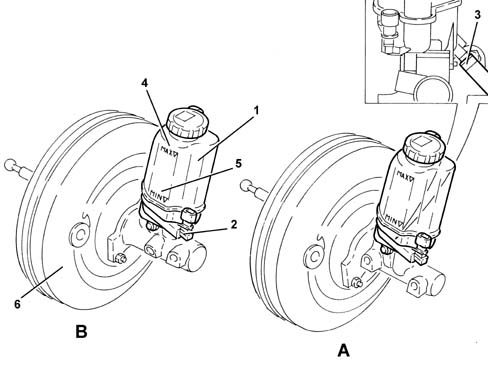

Specifications
- Path
- Descriptions > 33 BRAKES > 3330 HYDRAULIC BRAKING SYSTEM > 3330C BRAKE PUMP, RESERVOIR AND LOAD PROPORTIONING VALVE > Specifications
- Kind
- system description
- Applies to
- all engines; all production periods
- Interactive page
- https://sloeber94.github.io/elrnDB-lThss/en/#/152326
Applies to: all engines; all production periods
The brake pump is an integral part and comes with the brake servo.(See assembly ) 3330D BRAKE VACUUM SYSTEM
The hydraulic braking system reserve fluid reservoir is a press fit on the top part of the pump.
There is an attachment on the reservoir for connecting the hydraulic clutch release system supply pipe.(See assembly ) 1820B CLUTCH RELEASE HYDRAULIC OPERATION
There is an insufficient fluid level sensor in the reservoir that is activated when the fluid is below the minimum level. The insufficient fluid level conditions are signalled the moment a magnet, in the float in the reservoir, finds itself by the sensor, and the device notifies the Body Computer which causes the warning light in the instrument panel to come on.(See subassembly ) 5505 INSTRUMENT/GAUGE ELECTRICAL CIRCUITS

- A - Brake pump
- 1 - Brake fluid reservoir
- 2 - Insufficient fluid level indicator
- 3 - Clutch pump supply pipe attachment
- 4 - MAX fluid level
- 5 - MIN fluid level
- 6 - Brake servo